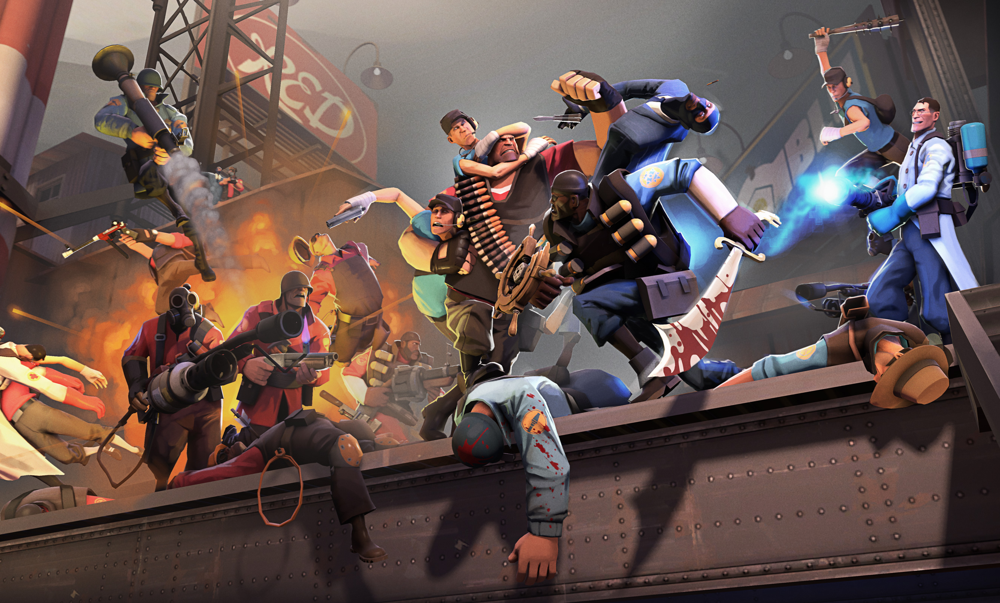

In the mid to late summer of 2024, I started playing TF2.
It was an immediate hook, spectactular gameplay, the sharp art style, vibrant colors, entertaining characters, and absurd world building felt like it was almost tailored to me specifically.
It's no wonder this game was popular for a while, competing with the likes of Blizzard's Overwatch (I say compete, as it's surpassed it on several occasions.)
But the thing that has carried it (and I) this far, all these years later, is the absolutely unhinged and scarily creative community that has grown around it. Like mold to bread, except if that mold gave the bread arms and legs and sentience. And eternal life, apparently.
The TF2 community is responsible for many additions to the game, bug fixes, maps, cosmetics and emotes. (but we just call them taunts.) The community is also responsible for a plethora of fan creations. The ever popular, and important addition to online meme culture, The Heavy Is Dead is what I would say, a staple in surreal fast paced humor, using spliced voicelines from the game.
There of course, is the other side of the spectrum, the fully voiced, feature length and quality, psychological horror film Emesis Blue. I have seen this movie, running at an hour and 48 minutes long, 25 times. I do not play about Emesis Blue.
Given it's importance in online culture, and the inescapable inclusion of the internet in modern life, TF2 was actually present and influencing my life before I even played. It was everywhere, even qouting it when I had no idea i was.

TF2 also contains a multiplayer gamemode, where you, and up to 6 other players fight against hoards of robots with your likeness. A personal favorite of mine, this gamemode, MANN VS MACHINE, has led to quite a few online friendships.

Mann VS Machine also works as a fun narrative to current day ethic crisises with AI. Destroying hoards of robots with your likeness trying to replace you because they're cheaper to pay than you? Absolutely wonderful. I want more.